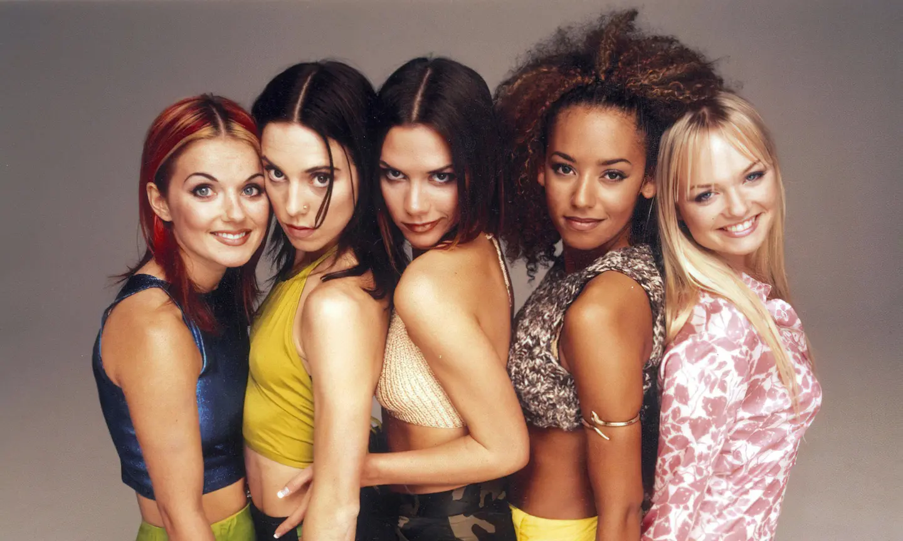
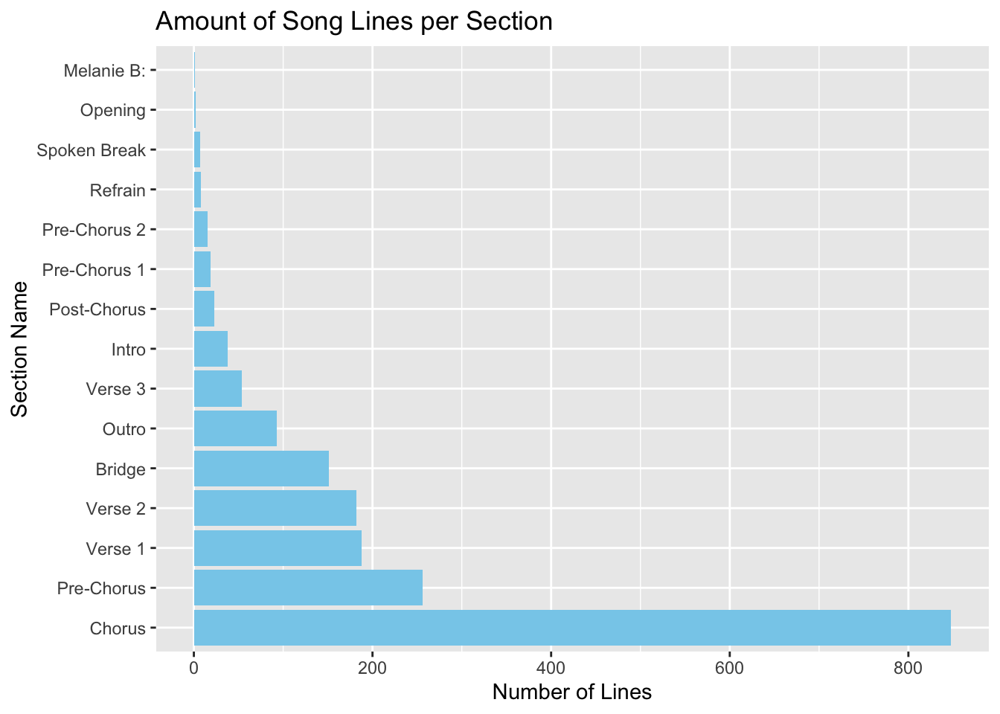
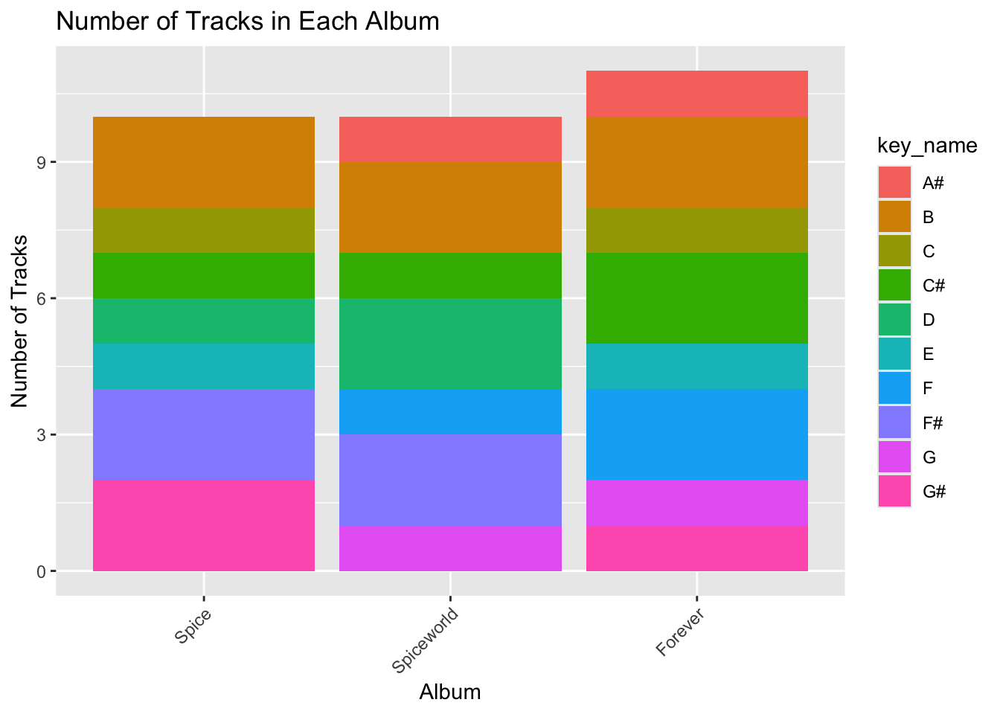
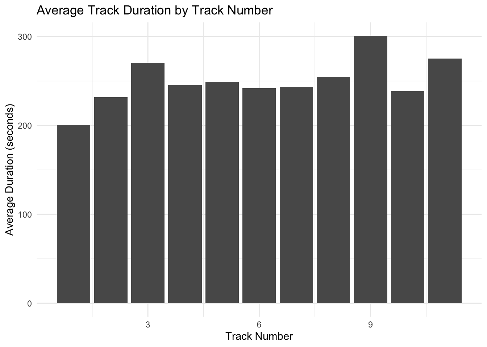
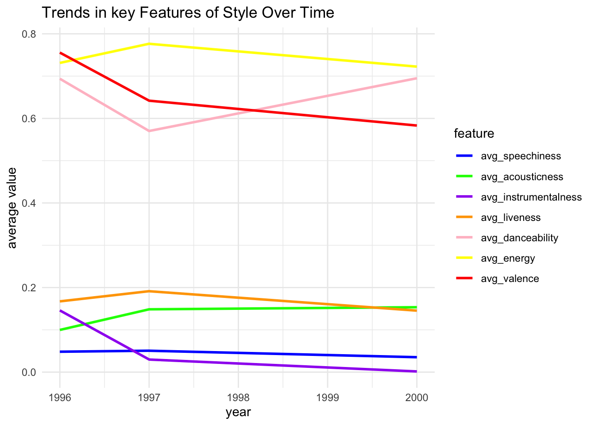
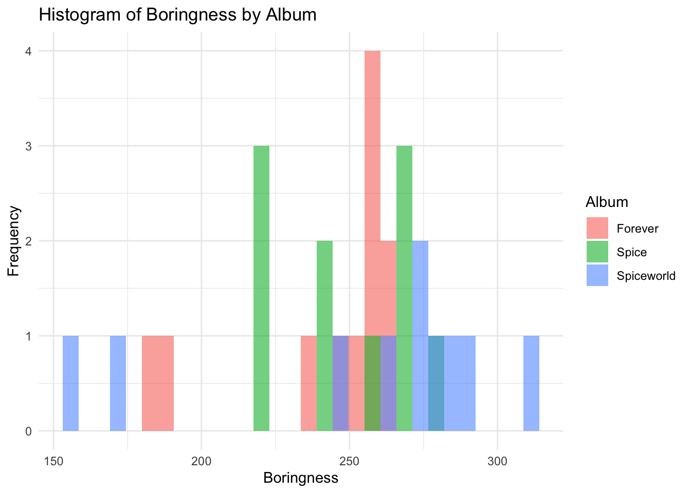
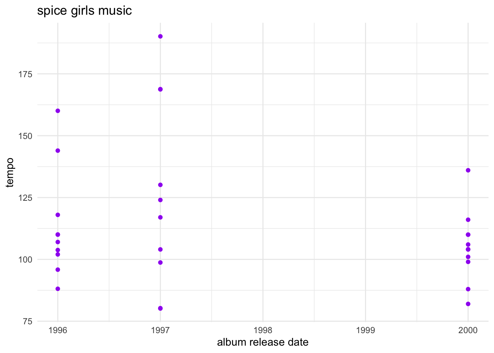
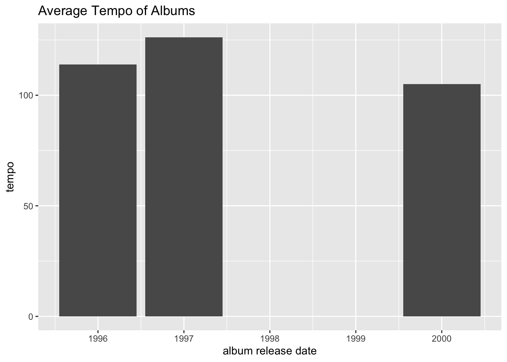

spc_tbl_ [1,885 × 9] (S3: spec_tbl_df/tbl_df/tbl/data.frame)
$ artist_name : chr [1:1885] "Spice Girls" "Spice Girls" "Spice Girls" "Spice Girls" ...
$ album_name : chr [1:1885] "Spice" "Spice" "Spice" "Spice" ...
$ track_number : num [1:1885] 1 1 1 1 1 1 1 1 1 1 ...
$ song_id : num [1:1885] 89740 89740 89740 89740 89740 ...
$ song_name : chr [1:1885] "Wannabe" "Wannabe" "Wannabe" "Wannabe" ...
$ line_number : num [1:1885] 1 2 3 4 5 6 7 8 9 10 ...
$ section_name : chr [1:1885] "Intro" "Intro" "Intro" "Intro" ...
$ line : chr [1:1885] "Hahaha" "Yo, I'll tell you what I want, what I really, really want" "So tell me what you want, what you really, really want" "I'll tell you what I want, what I really, really want" ...
$ section_artist: chr [1:1885] "Scary, Ginger" "Scary, Ginger" "Scary, Ginger" "Scary, Ginger" ...
- attr(*, "spec")=
.. cols(
.. artist_name = col_character(),
.. album_name = col_character(),
.. track_number = col_double(),
.. song_id = col_double(),
.. song_name = col_character(),
.. line_number = col_double(),
.. section_name = col_character(),
.. line = col_character(),
.. section_artist = col_character()
.. )
- attr(*, "problems")=<externalptr> Report

Lyrics Data
Data Set Structure
Total number of lines in Spice Girls songs
# A tibble: 31 × 2
song_name total_lines
<chr> <dbl>
1 "2 Become 1" 42
2 "Denying" 71
3 "Do It" 71
4 "Get Down With Me" 53
5 "Goodbye" 53
6 "Holler" 105
7 "If U Can\x92t Dance" 73
8 "If You Wanna Have Some Fun" 68
9 "Last Time Lover" 72
10 "Let Love Lead the Way" 67
# ℹ 21 more rowsHow many song lines are there in each section category?

Studio Album Tracks Data
Data Set Structure
spc_tbl_ [31 × 25] (S3: spec_tbl_df/tbl_df/tbl/data.frame)
$ artist_name : chr [1:31] "Spice Girls" "Spice Girls" "Spice Girls" "Spice Girls" ...
$ artist_id : chr [1:31] "0uq5PttqEjj3IH1bzwcrXF" "0uq5PttqEjj3IH1bzwcrXF" "0uq5PttqEjj3IH1bzwcrXF" "0uq5PttqEjj3IH1bzwcrXF" ...
$ album_id : chr [1:31] "4jbWZmf7kRxCBD6tgVepYh" "4jbWZmf7kRxCBD6tgVepYh" "4jbWZmf7kRxCBD6tgVepYh" "4jbWZmf7kRxCBD6tgVepYh" ...
$ album_release_date: Date[1:31], format: "2000-01-01" "2000-01-01" ...
$ album_release_year: num [1:31] 2000 2000 2000 2000 2000 2000 2000 2000 2000 2000 ...
$ danceability : num [1:31] 0.769 0.829 0.614 0.736 0.86 0.798 0.671 0.571 0.709 0.536 ...
$ energy : num [1:31] 0.819 0.764 0.788 0.779 0.71 0.751 0.75 0.481 0.872 0.539 ...
$ key : num [1:31] 10 5 11 8 1 5 1 0 7 11 ...
$ loudness : num [1:31] -3.94 -3.78 -5.55 -5.16 -4.21 ...
$ mode : num [1:31] 0 0 1 1 0 0 1 1 0 1 ...
$ speechiness : num [1:31] 0.0431 0.0431 0.027 0.0401 0.0356 0.0486 0.0279 0.0251 0.0443 0.0272 ...
$ acousticness : num [1:31] 0.0293 0.0287 0.155 0.0172 0.00259 0.009 0.188 0.177 0.253 0.744 ...
$ instrumentalness : num [1:31] 3.70e-03 3.29e-06 0.00 3.30e-03 3.57e-05 0.00 0.00 0.00 1.06e-02 5.68e-06 ...
$ liveness : num [1:31] 0.0744 0.0512 0.157 0.118 0.0387 0.186 0.296 0.18 0.287 0.094 ...
$ valence : num [1:31] 0.82 0.919 0.405 0.573 0.884 0.809 0.407 0.0734 0.858 0.307 ...
$ tempo : num [1:31] 110 104 116 101 110 ...
$ track_id : chr [1:31] "1NwDWbpg9dPH12xBd2ibrv" "0r5d5LmhLQwJVEw0kTEExp" "5EE1Uzg0JvtBhs6TRs33R0" "2O8kqbUJS1vkL3x9mF7WzM" ...
$ time_signature : num [1:31] 4 4 4 4 4 4 4 4 4 4 ...
$ duration_ms : num [1:31] 255866 254666 298293 251000 226266 ...
$ track_name : chr [1:31] "Holler" "Tell Me Why" "Let Love Lead The Way" "Right Back At Ya" ...
$ track_number : num [1:31] 1 2 3 4 5 6 7 8 9 10 ...
$ album_name : chr [1:31] "Forever" "Forever" "Forever" "Forever" ...
$ key_name : chr [1:31] "A#" "F" "B" "G#" ...
$ mode_name : chr [1:31] "minor" "minor" "major" "major" ...
$ key_mode : chr [1:31] "A# minor" "F minor" "B major" "G# major" ...
- attr(*, "spec")=
.. cols(
.. artist_name = col_character(),
.. artist_id = col_character(),
.. album_id = col_character(),
.. album_release_date = col_date(format = ""),
.. album_release_year = col_double(),
.. danceability = col_double(),
.. energy = col_double(),
.. key = col_double(),
.. loudness = col_double(),
.. mode = col_double(),
.. speechiness = col_double(),
.. acousticness = col_double(),
.. instrumentalness = col_double(),
.. liveness = col_double(),
.. valence = col_double(),
.. tempo = col_double(),
.. track_id = col_character(),
.. time_signature = col_double(),
.. duration_ms = col_double(),
.. track_name = col_character(),
.. track_number = col_double(),
.. album_name = col_character(),
.. key_name = col_character(),
.. mode_name = col_character(),
.. key_mode = col_character()
.. )
- attr(*, "problems")=<externalptr> How many tracks are there per album?

What is the average length of each track? (Grouped by track number)

1 Purpose
1.1 Define the Goal
My goal is to analyse the change in style of an artist using the data in the uploaded CSV file (studio_album_tracks.csv). I will choose 10 features to help me analyse: acousticness, danceability, energy, instrumentalness, key, liveness, mode, speechiness, tempo, valence.
1.2 About each features
Source from: https://help.spotontrack.com/article/what-do-the-audio-features-mean
Acousticness is a confidence measure from 0.0 to 1.0 of whether the track is acoustic.
1.0 represents high confidence the track is acoustic.
Danceability describes how suitable a track is for dancing based on a combination of musical elements including tempo, rhythm stability, beat strength, and overall regularity.
A value of 0.0 is least danceable and 1.0 is most danceable.
Energy is a measure from 0.0 to 1.0 and represents a perceptual measure of intensity and activity. Typically,
energetic tracks feel fast, loud, and noisy. For example, death metal has high energy, while a Bach prelude scores low on the scale. Perceptual features contributing to this attribute include dynamic range, perceived loudness, timbre, onset rate, and general entropy. 1.0 represents highly energetic.Instrumentalness predicts whether a track contains no vocals. “Ooh” and “aah” sounds are treated as instrumental in this context. Rap or spoken word tracks are clearly “vocal”. The closer the instrumentalness value is to 1.0, the greater likelihood the track contains no vocal content. Values above 0.5 are intended to represent instrumental tracks, but confidence is higher as the value approaches 1.0.
The Key the track is in. Integers map to pitches using standard Pitch Class notation.
E.g. 0 = C, 1 = C♯/D♭, 2 = D, and so on. If no key was detected, the value is -1.
Liveness detects the presence of an audience in the recording. Higher liveness values represent an increased probability that the track was performed live. A value above 0.8 provides strong likelihood that the track is live.
Mode indicates the modality (major or minor) of a track, the type of scale from which its melodic content is derived. Major is represented by 1 and minor is 0.
Speechiness detects the presence of spoken words in a track. The more exclusively speech-like the recording (e.g. talk show, audio book, poetry), the closer to 1.0 the attribute value. Values above 0.66 describe tracks that are probably made entirely of spoken words. Values between 0.33 and 0.66 describe tracks that may contain both music and speech, either in sections or layered, including such cases as rap music. Values below 0.33 most likely represent music and other non-speech-like tracks.
The overall estimated tempo of a track in beats per minute (BPM). In musical terminology, tempo is the speed or pace of a given piece and derives directly from the average beat duration.
Valence is a measure from 0.0 to 1.0 describing the musical positiveness conveyed by a track. Tracks with high valence sound more positive (e.g. happy, cheerful, euphoric), while tracks with low valence sound more negative (e.g. sad, depressed, angry).
1.3 About the data set and Data preprocessing
load the data
All the data we need is from the csv: studio_album_tracks. Path: https://github.com/rfordatascience/tidytuesday/blob/main/data/2021/2021-12-14/studio_album_tracks.csv
average audio features by year
This dataset contains data from 31 tracks in 3 albums. And the 3 albums (forever, spiceworld, spice) are released in three different years, 1996, 1997, and 2000 respectively.
Therefore, we can first group by the year, and compare the style of tracks in different years.
We calculate the mean value of the features of tracks of 3 years and save them into the new dataset
# A tibble: 3 × 8
album_release_year avg_speechiness avg_acousticness avg_instrumentalness
<dbl> <dbl> <dbl> <dbl>
1 1996 0.0483 0.0998 0.146
2 1997 0.0506 0.149 0.0299
3 2000 0.0353 0.153 0.00160
# ℹ 4 more variables: avg_liveness <dbl>, avg_danceability <dbl>,
# avg_energy <dbl>, avg_valence <dbl>2 Data Analysis
2.1 Plot the graph of average

From the graph above, we can see that the style change a little bit from 1996 to 1997. More detailed:
There are features that not show a great variance between three album:
- The average speechiness of the tracks in three albums maintain the same from 1996 to 2000, at about 0.05, which is a very low value of the speechiness. This means that the all the tracks are non-speech-like tracks.
- The average liveness increased a little bit in 1997, but decrease back to origin in 2000, and the value is all below 0.2. This means there is little presence of an audience in the recording, most of the audios are not live
- The average danceability decreased a lot in 1997, but increase back to origin in 2000, and the values are almost higher than 0.6. This means most of their songs are danceable, but in 1997 it is not so danceable.
- The average energy increased a little in 1997, but decrease back to origin in 2000, and the values are all higher than 0.7. This means most of their songs can let people feel fast, loud, and noisy.
There are 3 features that show a strictly increase or decrease trend in three album:
- The average instrumentalness decrease from 0.15 to 0.02 in 1997 or even becomes near 0 in 2000. This means that the the use of instruments was reduced in 1997, and even in the subsequent tracks, instruments were hardly heard.
- The average valence also decrease a lot, from 0.75 to 0.59. This means that the music sounds less positive in the newer tracks, but still spread a positive mood.
- The average acousticness increase from 0.1 to 0.15, the increase is not so obvious. This means that the tracks is more acoustic.
In summary, all the tracks are non-speechiness and non-liveness. The artist try to change the style a little bit in 1997. In 1997, the songs are more energetic, more acoustic, and less positive.
2.2 Boringness Test
In this test, I create an equation of calculating boringness:
\(boringness = loudness + tempo + (energy\times100) + (danceability\times100)\)
If boringness value is low, then it is boring. Vice versa.
The boringness of each track in the album is shown by the following graph:

From this chart, we can see that the album with the highest average quality is the album Spice, which was the least boring when they first debuted. The album with the lowest average quality is the second album Spice World. The average value of the third album Forever has rebounded and even reached the highest value. This also confirms my analysis in the first part, which is consistent with the trend of their trying to make changes in some aspects, but finding that the effect is not good, and then returning to the original style.
Lyrical Analysis
Most Popular Member
What can the Spice Girls’ lyrics tell audiences about them and their music? Above is a bar graph counting the amount of total lines for each Spice Girl in their entire discography. These numbers may reveal interesting information about which members were more popular, or whether the member’s popularity correlated to their music. Maybe their personalities and public persona were more important to popularity than the amount of lines they had? Lyrically, the most popular member was Sporty Spice (Melanie C), followed by Baby Spice (Emma Bunton), then Scary (Mel B), Ginger (Geri Halliwell-Horner), and finally Posh (Victoria Beckham).
Perhaps different albums promoted different members? Released in 1996, Scary Spice was actually featured the most in their first album, Spice. Coming in second and third were Ginger and Baby Spice. The release of the second album Spiceworld, however, placed Sporty Spice in a more prominent role musically. She rose from having the fourth most lines to being the clear favorite, as the graph below shows. Scary Spice fell to third, with Baby Spice rising to second and Ginger falling further behind. Why did Sporty Spice receive so many more during the second album? There may not be one clear answer. Audience preferences, musical ability, and more are all factors that could explain the change. One thing however, is certain: Sporty Spice, on paper, became the most popular member of the Spice Girls.
Most Popular Member by Album
But what about the third album? Geri Halliwell-Horner left the group in 1998 to the shock of fans citing creative differences, exhaustion, as well as rumored arguments with Mel B. In response, The four remaining members remained and adapted their musical style and image for their next album Forever.
Despite a new R/B sound, Sporty Spice remained as the member with the most lines. Interestingly, the album has the least amount of lines out of their entire discography, which attests to their new musical approach after the loss of Halliwell-Horner.
Lyrical Themes
Top Words
Moving to the lyrics themselves, the graph above shows the top words in all of the Spice Girls’ lyrics, with filler words removed. “Love” takes the top spot, highlighting the prominence of relationship themes, both romantic and platonic, in their music. “Time” is next. This could refer to time in romantic and platonic relationships. I.e. “not wanting to waste time.” Additionally, “dance” “shake,” and “move” all suggest that partying or celebrating are important topics in the Spice Girls’ music. This all aligns with the fun, independent, confident image the Spice Girls’ advertised during the 90s and beyond.
This is further supported by a sentiment analysis of the lyrics. The results show that the Spice Girls’ songs contain more positive sentiment than negative.
Sentiment Analysis
To further expand our lyrical analysis, we can use a tf_idf generative model (more information in the appendix) to generate 3 major themes. As shown below, the model groups key words into different “topics,” or themes. we can then analyze specific songs and albums to determine which themes are most prominent. This information can be helpful in determining which themes may have resonated with listeners when taking into account the popularity of the respective songs and albums.
Theme one’s top words include “time” and “deeper,” therefore, we will call it the “time theme.” Key words for theme two include “love”, “holler”, and “generation” while theme three is largely defined by “dance”. Thus, they will be called the “love theme” and “dance theme”, respectively.The themes are clearly subjective, with pretty significant overlap. This could mean that the Spice Girls explored only a couple of significant themes, like relationships and love, throughout their discography, opting to instead evolve in other ways.
3 Main Themes
![This graph depicts the results of a tf_idf analysis to determine 3 major themes, or 'topics,' in Spice Girls songs. There are three columns denoting each topic, with horizontal bar graphs recording the prominence of each word in their respective topic. This generative model unfortunately does not give the name for each topic, so it is up to the interpretation of the viewer. Topic one may be more of a sultry love theme, topic 2 may be related more to 'games' played in romantic relationships, while topic three may be more dance related.](report_files/figure-html/unnamed-chunk-16-1.png)
Theme Distribution Across Album
To further explore how the Spice Girls changed lyrically, the graph above shows the topic distribution across albums. Interestingly, each album as a distinct topic, indicating that the group may have decided to focus on a unique theme for each album. For Spice, the time theme is first. The Dance theme leads in Spiceworld, while for Forever the love theme is highest.
Additionally, the time theme lessens for each album. This shows that the Spice Girls may have been purposefully aiming to explore new avenues in their lyrics.
Overall, the topic distribution across their albums gives interesting insight into the changing lyrical style of the Spice Girls.
These various lyrical analyses have shed light on an often overlooked aspect of the Spice Girls: their lyrics. While a topic distribution analysis may have shown that their quite significant overlap at times in their lyrical themes, the album distribution indicates an attempt to evolve musically. Additionally the analysis of line distribution among the members revealed a possible favorite, or center: Sporty Spice.
What kind of music do the spice girls make?
# A tibble: 31 × 25
# Groups: album_release_year [3]
artist_name artist_id album_id album_release_date album_release_year
<chr> <chr> <chr> <date> <dbl>
1 Spice Girls 0uq5PttqEjj3IH1bz… 4jbWZmf… 2000-01-01 2000
2 Spice Girls 0uq5PttqEjj3IH1bz… 4jbWZmf… 2000-01-01 2000
3 Spice Girls 0uq5PttqEjj3IH1bz… 4jbWZmf… 2000-01-01 2000
4 Spice Girls 0uq5PttqEjj3IH1bz… 4jbWZmf… 2000-01-01 2000
5 Spice Girls 0uq5PttqEjj3IH1bz… 4jbWZmf… 2000-01-01 2000
6 Spice Girls 0uq5PttqEjj3IH1bz… 4jbWZmf… 2000-01-01 2000
7 Spice Girls 0uq5PttqEjj3IH1bz… 4jbWZmf… 2000-01-01 2000
8 Spice Girls 0uq5PttqEjj3IH1bz… 4jbWZmf… 2000-01-01 2000
9 Spice Girls 0uq5PttqEjj3IH1bz… 4jbWZmf… 2000-01-01 2000
10 Spice Girls 0uq5PttqEjj3IH1bz… 4jbWZmf… 2000-01-01 2000
# ℹ 21 more rows
# ℹ 20 more variables: danceability <dbl>, energy <dbl>, key <dbl>,
# loudness <dbl>, mode <dbl>, speechiness <dbl>, acousticness <dbl>,
# instrumentalness <dbl>, liveness <dbl>, valence <dbl>, tempo <dbl>,
# track_id <chr>, time_signature <dbl>, duration_ms <dbl>, track_name <chr>,
# track_number <dbl>, album_name <chr>, key_name <chr>, mode_name <chr>,
# key_mode <chr>

This bar graph shows the different album release years and it shows the average tempo of each song. Focusing on the kind of music the Spice Girls make I decided to use tempo as a variable for measurement because most of their music is high tempo and high energy. This is a common factor between many pop songs as many songs in this genre tend to be high energy with a higher tempo compared to other types of music. We can see in the graph that the average tempo of the albums are all fairly high. The average tempo of pop songs is usually around 100-130 and on the bar graph that is shown the average tempo of all the albums is in between 100 and 130, right in the middle of the average tempo for pop songs.